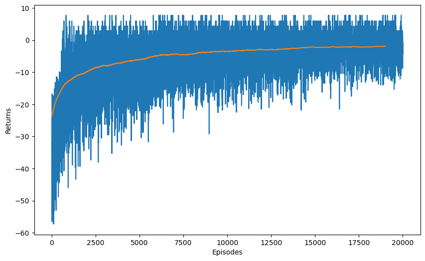
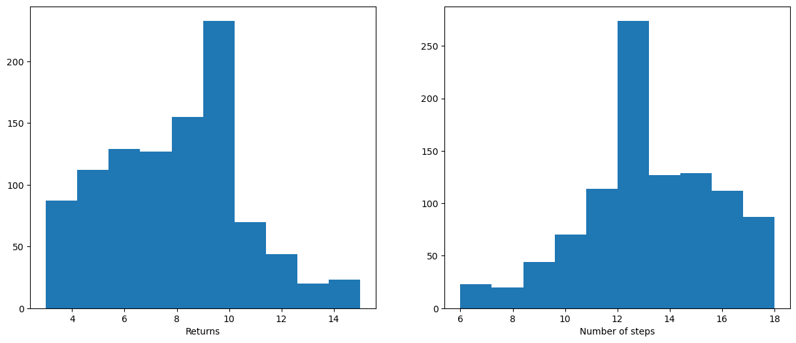
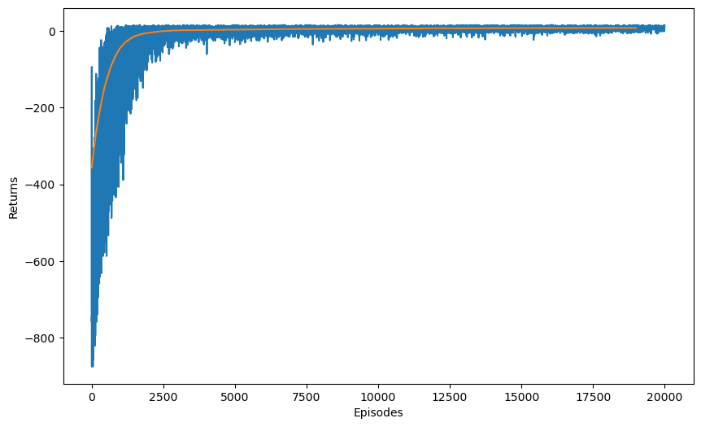
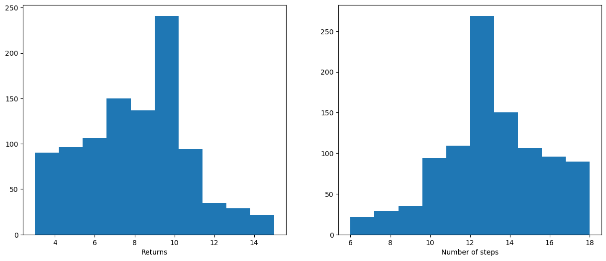

import numpy as np
import matplotlib.pyplot as plt
rng = np.random.default_rng()
import time
from IPython.display import clear_output
try:
import google.colab
IN_COLAB = True
except:
IN_COLAB = False
if IN_COLAB:
!pip install gym > /dev/null 2>&1
import gym
def running_average(x, N):
cumsum = np.cumsum(np.insert(np.array(x), 0, 0))
return (cumsum[N:] - cumsum[:-N]) / NQ-learning
In this short exercise, we are going to apply Q-learning on the Taxi environment used last time for MC control.
As a reminder, Q-learning updates the Q-value of a state-action pair after each transition, using the update rule:
\Delta Q(s_t, a_t) = \alpha \, (r_{t+1} + \gamma \, \max_{a'} \, Q(s_{t+1}, a') - Q(s_t, a_t))
Q: Update the class you designed for online MC in the last exercise so that it implements Q-learning.
The main difference is that the update() method has to be called after each step of the episode, not at the end. It simplifies a lot the code too (no need to iterate backwards on the episode).
You can use the following parameters at the beginning, but feel free to change them:
- Discount factor \gamma = 0.9.
- Learning rate \alpha = 0.1.
- Epsilon-greedy action selection, with an initial exploration parameter of 1.0 and an exponential decay of 10^{-5} after each update (i.e. every step!).
- A total number of episodes of 20000.
Keep the general structure of the class: train() for the main loop, test() to run one episode without exploration, etc. Add a method to compute the discounted return of each episode, as it will not be done automatically by the update() method anymore. Plot the training and test performance in the end and render the learned deterministic policy for 10 episodes.
Note: if s_{t+1} is terminal (done is true after the transition), the target should not be r_{t+1} + \gamma \, \max_{a'} \, Q(s_{t+1}, a'), but simply r_{t+1} as there is no next action.
class QLearningAgent:
"""
Q-learning agent.
"""
def __init__(self, env, gamma, epsilon, decay_epsilon, alpha):
"""
:param env: gym-like environment
:param gamma: discount factor
:param epsilon: exploration parameter
:param decay_epsilon: exploration decay parameter
:param alpha: learning rate
"""
self.env = env
self.gamma = gamma
self.epsilon = epsilon
self.decay_epsilon = decay_epsilon
self.alpha = alpha
# Q_table
self.Q = np.zeros([self.env.observation_space.n, self.env.action_space.n])
def act(self, state):
"Returns an action using epsilon-greedy action selection."
action = rng.choice(np.where(self.Q[state, :] == self.Q[state, :].max())[0])
if rng.random() < self.epsilon:
action = self.env.action_space.sample()
return action
def update(self, state, action, reward, next_state, done):
"Updates the agent using a single transition."
# Bellman target
target = reward
if not done:
target += self.gamma * self.Q[next_state, :].max()
# Update the Q-value
self.Q[state, action] += self.alpha * (target - self.Q[state, action])
# Decay epsilon
self.epsilon = self.epsilon * (1 - self.decay_epsilon)
def train(self, nb_episodes, render=False):
"Runs the agent on the environment for nb_episodes. Returns the list of obtained returns."
# Returns
returns = []
# Fixed number of episodes
for episode in range(nb_episodes):
# Reset
state = self.env.reset()
done = False
nb_steps = 0
# Store rewards
rewards = []
# Sample the episode
while not done:
# Render the current state
if render:
clear_output(wait=True)
self.env.render()
time.sleep(0.1)
# Select an action
action = self.act(state)
# Perform the action
next_state, reward, done, info = self.env.step(action)
# Append reward
rewards.append(reward)
# Learn from the transition
self.update(state, action, reward, next_state, done)
# Go in the next state
state = next_state
# Increment time
nb_steps += 1
# Compute the discounted return of the episode.
return_episode = self.discounted_return(rewards)
# Store info
returns.append(return_episode)
# Print info
if episode % 100 == 0:
clear_output(wait=True)
print('Episode', episode, ':')
print(' return:', return_episode)
print(' steps:', nb_steps)
print(' epsilon:', self.epsilon)
return returns
def test(self, render=True):
"Performs a test episode without exploration."
previous_epsilon = self.epsilon
self.epsilon = 0.0
# Reset
state = self.env.reset()
done = False
nb_steps = 0
rewards= 0
# Sample the episode
while not done:
if render:
clear_output(wait=True)
self.env.render()
time.sleep(0.1)
action = self.act(state)
next_state, reward, done, info = self.env.step(action)
rewards += reward
state = next_state
nb_steps += 1
self.epsilon = previous_epsilon
return rewards, nb_steps
def discounted_return(self, rewards):
"Computes the discounted return of an episode based on the list of rewards."
ret = 0.0
for reward in reversed(rewards):
ret = reward + self.gamma*ret
return ret# Parameters
gamma = 0.9
epsilon = 1.0
decay_epsilon = 1e-5
alpha = 0.1
nb_episodes = 20000
# Create the environment
env = gym.make("Taxi-v3")
# Create the agent
agent = QLearningAgent(env, gamma, epsilon, decay_epsilon, alpha)
# Train the agent
returns = agent.train(nb_episodes)
# Plot training returns
plt.figure(figsize=(10, 6))
plt.plot(returns)
plt.plot(running_average(returns, 1000))
plt.xlabel("Episodes")
plt.ylabel("Returns")
plt.show()
# Test the agent for 1000 episodes
test_returns = []
test_steps = []
for episode in range(1000):
return_episode, nb_steps = agent.test(render=False)
test_returns.append(return_episode)
test_steps.append(nb_steps)
print("Test performance", np.mean(test_returns))
plt.figure(figsize=(15, 6))
plt.subplot(121)
plt.hist(test_returns)
plt.xlabel("Returns")
plt.subplot(122)
plt.hist(test_steps)
plt.xlabel("Number of steps")
plt.show()Episode 19900 :
return: 5.9432300000000025
steps: 7
epsilon: 0.0190286448954996
Test performance 7.787
# Visualize some episodes
returns = []
length_episode = []
for episode in range(5):
# Perform one episode
return_episode, nb_steps = agent.test(render=True)
# Store info
returns.append(return_episode)
length_episode.append(nb_steps)
print("Returns:", returns)
print("Number of steps", length_episode)+---------+
|R: | : :G|
| : | : : |
| : : : : |
| | : | : |
|Y| : |B: |
+---------+
(North)
Returns: [6, 8, 9, 9, 12]
Number of steps [15, 13, 12, 12, 9]Q: Compare the performance of Q-learning to online MC. Experiment with parameters (gamma, epsilon, alpha, etc.).
# Parameters
gamma = 1.0
epsilon = 1.0
decay_epsilon = 1e-5
alpha = 0.05
nb_episodes = 20000
# Create the environment
env = gym.make("Taxi-v3")
# Create the agent
agent = QLearningAgent(env, gamma, epsilon, decay_epsilon, alpha)
# Train the agent
returns = agent.train(nb_episodes)
# Plot training returns
plt.figure(figsize=(10, 6))
plt.plot(returns)
plt.plot(running_average(returns, 1000))
plt.xlabel("Episodes")
plt.ylabel("Returns")
plt.show()
# Test the agent for 1000 episodes
test_returns = []
test_steps = []
for episode in range(1000):
return_episode, nb_steps = agent.test(render=False)
test_returns.append(return_episode)
test_steps.append(nb_steps)
print("Test performance", np.mean(test_returns))
plt.figure(figsize=(15, 6))
plt.subplot(121)
plt.hist(test_returns)
plt.xlabel("Returns")
plt.subplot(122)
plt.hist(test_steps)
plt.xlabel("Number of steps")
plt.show()Episode 19900 :
return: 4.0
steps: 17
epsilon: 0.012511064005448906
Test performance 7.962
# Visualize some episodes
returns = []
length_episode = []
for episode in range(5):
# Perform one episode
return_episode, nb_steps = agent.test(render=True)
# Store info
returns.append(return_episode)
length_episode.append(nb_steps)
print("Returns:", returns)
print("Number of steps", length_episode)+---------+
|R: | : :G|
| : | : : |
| : : : : |
| | : | : |
|Y| : |B: |
+---------+
(North)
Returns: [6, 12, 4, 8, 5]
Number of steps [15, 9, 17, 13, 16]A: Q-learning accepts much higher values of gamma than MC, because the returns have a much lower variance. With the right parameters, Q-learning can learn much faster than MC.